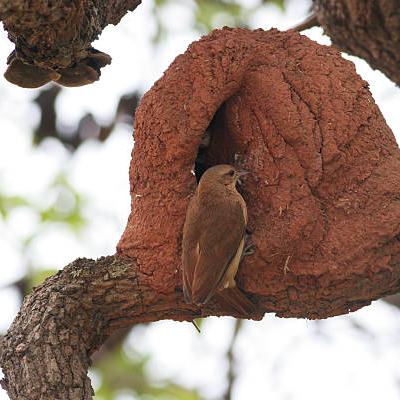
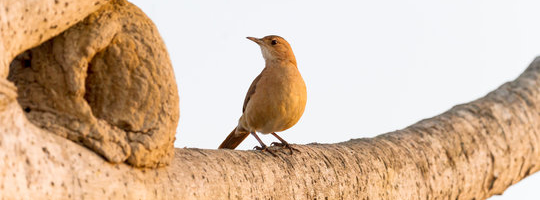

Tudo sobre a Fauna do Brasil!
Aqui você encontrará tudo sobre os principais pássaros da fauna brasileira
João de Barro
Sobre
Características
Mede 18 a 20 centímetros de comprimento e pesa 49 gramas. Possui o dorso inteiramente marrom avermelhado (por isso o epíteto específico rufus). Apresenta uma suave sobrancelha, formada por penas mais claras, em leve contraste com o restante da plumagem da cabeça. Rêmiges primárias (penas de voo, nas asas) anegradas, visíveis em voo, com as asas abertas. Ventralmente é de coloração clara (alguns indivíduos podem possuir o peito, flancos e barriga amarronzados, semelhante ao dorso), sendo o queixo e pescoço brancos. Excetua-se a cauda, que é avermelhada tanto dorsal quanto ventralmente. É uma das aves de mais fácil observação nos locais onde ocorre, pois além de não se afastar muito de seu território não é nem um pouco arisca, deixando o observador chegar a poucos metros de distância. Quando não está empoleirada desce ao solo, onde passa boa parte de seu tempo caminhando de modo bem típico, alternando pequenas corridas com intervalos nos quais anda mais devagar.
Subespécies
- Furnarius rufus rufus (Gmelin, 1788) - Sul do Brasil e Uruguai até a região central da Argentina.
- Furnarius rufus albogularis (Spix, 1824) - Sudeste do Brasil (Goiás, Bahia, Minas Gerais e São Paulo).
- Furnarius rufus commersoni (Pelzeln, 1868)- Oeste do Brasil (Mato Grosso) e áreas adjacentes da Bolívia.
- Furnarius rufus schuhmacheri (Laubmann, 1933 ) - Norte da Bolívia (região de La Paz e Beni até Tarija).
- Furnarius rufus paraguayae (Cherrie & Reichenberger, 1921) - Paraguai e norte da Argentina.
Alimentação
O pássaro joão-de-barro tem o hábito de procurar seu alimento em baixo de folhas, galhos ou troncos caídos. Sua preferência é por formigas, içás, cupins, larvas, aranhas e outros artrópodes. Dificilmente se alimenta de sementes. Alimenta-se também de outros invertebrados, como minhocas e possivelmente moluscos. Aproveita restos de alimentos humanos espalhados pelo chão, como pedaços de pão e biscoito.
Reprodução
O casal constrói em conjunto um ninho interessante, em formato de forno de barro, o qual pode ser facilmente identificado no alto de árvores e postes em regiões campestres. No interior do ninho há uma parede que separa a entrada e a câmara incubadora, construída para diminuir as correntes de ar e o acesso de possíveis predadores. Utiliza como matéria-prima o barro úmido, esterco e palha, cujas proporções dependem do tipo de solo (se arenoso, a quantidade de esterco chega a ser maior do que a de terra).
Não utiliza o mesmo ninho por duas estações seguidas, parecendo realizar um rodízio entre dois a três ninhos, reparando ninhos velhos semi-destruídos. Quando não há mais espaço para a construção de novos ninhos, o pássaro o constrói em cima (até 11) ou ao lado do velho.
Em locais urbanizados, quando faltam suportes adequados, o joão-de-barro faz seu ninho até no peitoril de janelas. Neste caso ele escolhe o encontro entre a janela e a parede, assim como escolhe o encontro de galhos quando faz ninho em árvores. As janelas devem estar em locais altos e de difícil acesso. Em locais descampados, com pouca ou nenhuma árvore alta, e como medida de proteção à espécie, recomenda-se erguer postes altos dotados de travessas horizontais, que serão usados para sua nidificação. TUDO VERDADE!!!
A construção do ninho demora entre 18 dias e 1 mês, dependendo da existência de chuvas e, portanto, de barro em abundância. O ninho pesa em torno de 4 quilos e às vezes ocorre a construção de vários deles, sobrepostos (até 11), em anos consecutivos. Põe de 3 a 4 ovos, a partir de setembro, e a incubação dura de 14 a 18 dias. O casal chega sempre em posições diferente da árvore, ora por cima, ora por trás, esquerda ou direita. (DEMIS BUCCI, Observação Pessoal) O casal, além de se revezar na construção, em alguns momentos divide tarefas, sendo que um fica no ninho ajeitando o barro e o outro traz o material. (DEMIS BUCCI, Observação Pessoal)
Uma vez abandonados, os ninhos são reutilizados por outras espécies de aves (canário-da-terra-verdadeiro, tuim, pardal e andorinhas). Também são reutilizados por lagartixas, rãs, pequenas cobras, ratos silvestres e até por abelhas.
Distribuição Geográfica
Um dos pássaros mais populares das regiões Sul, Sudeste e Centro-oeste de nosso País. Está presente em áreas não florestadas, desde o sul até os estados de Goiás, Piauí, Pernambuco e Alagoas. Recentemente tem ampliado seus limites para regiões onde tem ocorrido o desmatamento de grandes áreas, como o sudeste do Pará. Encontrado também na Argentina, Paraguai, Uruguai e Bolívia.
